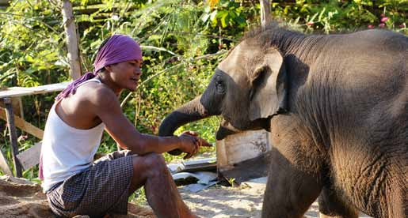

Sri Lanka
Familierejsen til Sri Lanka er tilrettelagt med tre opholdssteder. På dags-ture oplever I tidligere kongebyer, hvor man fornemmer landets historiske dybde, kommer til Anuradhapura med det gamle Bo-træ og til Sigiriya, hvor Kong Kasyapa byggede sin særprægede løveborg på en klippetop. I bor bl.a. i det smukke Kandy, den gamle kongeby med Tandens Tempel. I besøger kokosplantager og hører om teproduktion, og så skal I naturligvis opleve det rige dyreliv i de frodige nationalparker. Rejsen slutter ved stranden b.a. med besøg på et skildpadde-center og med mulighed for en sejltur, hvor I kan observere blåhvaler.
Pris fra 10.900 kr / børn under 12 år fra 5.900 kr
Prisen inkluderer:
- Kørsel i bil/minibus med jeres egen, lokale engelsktalende rejseleder
- hotelophold med morgenmad på hotellet hver dag
- de i programmet nævnte arrangementer og entréer
- 24/7 hotline til guide på hele rejsen.
Prisen inkludere ikke:
- Fly til og fra Sri Lanka
- øvrige måltider
- drikkepenge til guide og chauffør
DAGSPROGRAM:
Dag 1 Afrejse fra Danmark
Dag 2 Ankomst. Colombo
Dag 3 Colombo og videre til Habarana
Dag 4 Halvdagsudflugt. Habarana
Dag 5 Løveklippen. Hanarana
Dag 6 Vandretur til små landsbybesøg og elefanter. Habarana
Dag 7 Habarana - Kandu. Kokosplantager og krydd-erihaver
Dag 8 Elefanter. Kandy
Dag 9 Teplanteger. Kandy
Dag 10 Og så til stranden. Mirissa
Dag 11 Blåhvaler. Mirissa
Dag 12 Mirissa
Dag 13 Mirissa
Dag 14 Hjemkomst
Fakta om rejsen:
Sri Lanka har et rigtigt behageligt tropeklima og en vidunderlig natur med høje bjerge, blinkende rister-rasser, bølgende temarker, vilde vandfald, uendelige palmestrande og saftige, grønne regnskove. De mange dagobaer (Buddha-statuer) og gulklædte, kronragede munke overalt viser buddhismens store betydning.
Rundrejsen er tilrettelagt med tre opholdssteder. På dagsture oplever I tidligere kongebyer, hvor man fornemmer landets historiske dybde, kommer til Sigiriya, hvor Kong Kasyapa byggede sin særprægede løveborg på en klippetop. I bor bl.a. i det smukke Kandy, den gamle kongeby med Tandens Tempel. I besøger kokosplantager og hører om teproduktion, I besøger en camp for elefantunger, der er kommet til skade i naturen og som genoptrænes for at de igen kan klare sig.Rejsen slutter ved stranden, hvor I kan observere blåhvaler.
Rejsen henvender sig til familier, der vil opleve verden sammen – og alle generationer er velkomne. I rejser jeres familie sammen med en af vores dygtige lokale guider, der taler godt engelsk og som sørger for, at rejsen bliver en stor oplevelse for hele familien.
Da rejsen skræddersyes til jeres familie kan I ændre i programmet så det passer til jeres ønsker og behov.